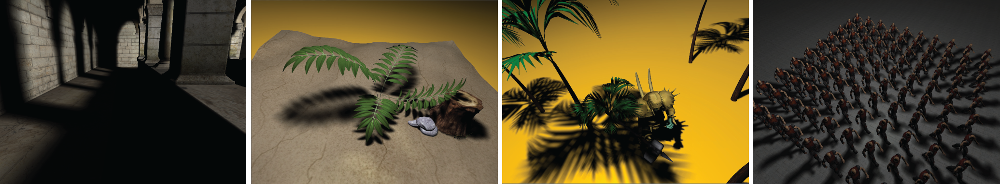

Variance Soft Shadow Mapping
Baoguang Yang1,3, Zhao Dong2*, Jieqing Feng3, Hans-Peter Seidel2, Jan Kautz4
1Autodesk, China 2MPI Informatik, Germany 3State Key Lab of CAD&&CG,Zhejiang University 4University College London
*The first two authors contributed equally.

Figure 1: Different rendering results generated by our variance soft shadow mapping method without any precomputation. Performance (from left to right): 131fps(76k faces), 148fps(141k faces), 110fps(120k faces), 25fps(9700k faces)
Paper Abstract
We present variance soft shadow mapping (VSSM) for rendering plausible soft shadow in real-time. VSSM is based on the theoretical framework of percentage-closer soft shadows (PCSS) and exploits recent advances in variance shadow mapping (VSM). Our new formulation allows for the efficient computation of (average) blocker distances, a common bottleneck in PCSS-based methods. Furthermore, we avoid incorrectly lit pixels commonly encountered in VSM-based methods by appropriately subdividing the filter kernel. We demonstrate that VSSM renders highquality soft shadows efficiently (usually over 100 fps) for complex scene settings. Its speed is at least one order of magnitude faster than PCSS for large penumbra.
Materials for Download
- Paper(Preprint) (8MB), to appear in Pacific Graphics (PG) 2010.
- Final video (Free Xvid Codec, 69MB).
- You can check out the video from Youtube.
Bibtex
@ARTICLE{YDK:2010:VSSM,
author = {Yang, Baoguang and Dong, Zhao and Feng, Jieqing and Seidel, Hans-Peter and Kautz, Jan},
title = {Variance Soft Shadow Mapping},
booktitle = {Computer Graphics Forum},
number = {7},
volume = {29},
pages = {2127--2134},
year = {2010}
}
Acknowledgements
We would like to thank the anonymous reviewers for their insightful comments. Part of the research at UCL is funded by EPSRC (EP/E047343/1) and the TSB (Q2047E), and part of the research is funded by the NSF of China (60933007, 60873046), the 973 program of China (2009CB320801).